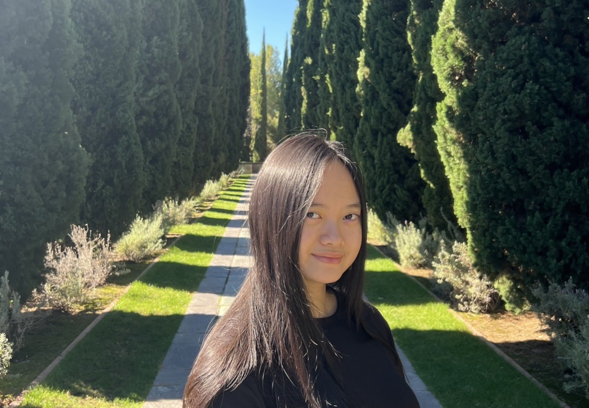

About Me

Hello, I’m Kathleen! I am a Computer Science student who wants to contribute to engineering with practical programming skills. I hope to build applications and tools that make life easier and more accessible for people who need support while I keep learning and improving my development skills.
Why I’m Taking This Course
I want to learn more about how HTML and CSS are used in real web development. I’ve worked with the basics before and taught myself a lot on my own, but my CS coursework followed a different path. Now I’m taking this class to see where I’m at, fill in gaps, and strengthen my frontend skills and tools so I can build cleaner and more reliable pages and move into modern UI work.
What I Hope to Gain
My goal is a steady workflow: brainstorm the content and purpose, do a sample layout of what should be expected, and style it with care. I want to feel comfortable making small, polished pages that look good on phones and laptops, with consistent and flexbilible spacing and readable type. Sometimes keeping certain things simple can enhance user-friendliness.
Prior Experience
I love frontend engineering. I’ve used HTML and CSS many times to build my designs in practice projects, and I often add JavaScript to enhance features and interactions. CSS is always challenging to me until now as it gives me problems with its specificity and the order of rules can be confusing. Hence, I want to focus on clearer structure and a simple consistent style that I can always refer and track my past work.
Hobbies
Here are a few simple things that make my week feel balanced and my energy to be restored:
- Going on a hike at different trails and national parks
- Sketching architectural designs and landscapes
- Trying new coffee and food spots
- Solving puzzles and brain games
- Listening to mellow playlists while studying